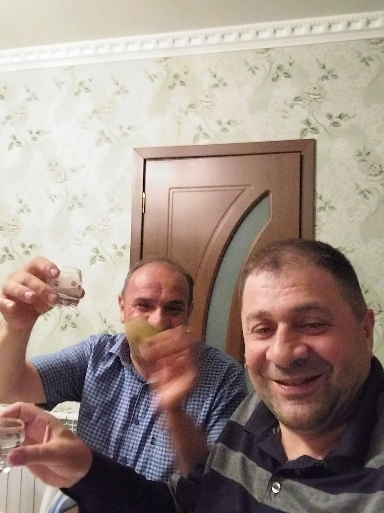

@BUNYAMIN MAMMADOV

Bunyamin Mammadov is a professional dentist. He has been working in the field of dentistry since 1992. Bunyamin started this profession together with his partner Saadat Mammadova. They established SRMMED MMC in 2015 and currently work in the same institution. Bunyamin was born in 1969 in the village of Kelel in Dagestan. After living there for 6 years, they moved to Zaqatala. His father, Qasim, was a teacher of the Russian language and literature. His mother,Xatun, worked as a baker. Bunyamin completed his secondary education at Secondary School No. 2. After finishing his secondary education, he went to the city of Maxackala to study in the 10th grade. Bunyamin pursued his higher education in the city of Saint Petersburg, Russia.